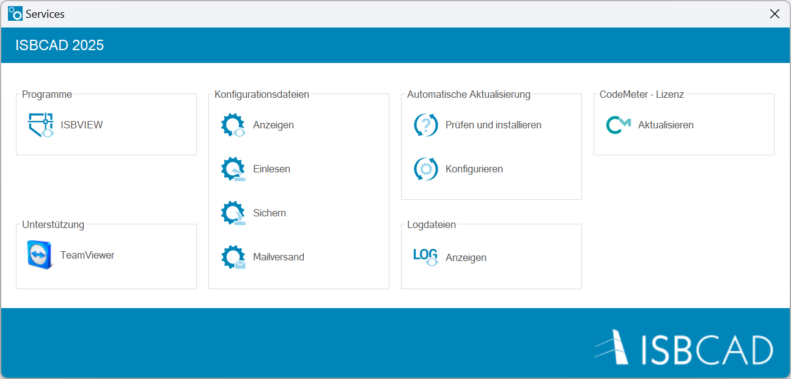
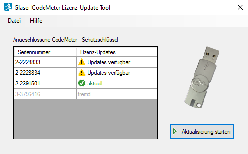

Windows-Startmenü → Alle → Programmgruppe ISBCAD 2026 → Services.
Optionen im Dialog "Services"
 |
|
Öffnet den Betrachter für Zeichnungsdateien (ISBVIEW). |
|
Der TeamViewer ist eine Fernwartungs-Software, die es Ihnen und unserem Support ermöglicht, u. a. gemeinsam eine Zeichnung zu bearbeiten. Somit können wir Sie schnell und auf einfachem Wege bei Ihrer Fragestellung unterstützen. Starten Sie den TeamViewer erst dann, wenn Sie von unserem Support dazu aufgefordert werden. Weitere Informationen finden Sie unter: |
In den Konfigurationsdateien sind alle Einstellungen gespeichert, die Sie während des Arbeitens mit ISBCAD vornehmen, wie z. B. Systemdaten-Einstellungen, Schraffurtypen, Stahllisteneinträge und Tastaturbelegungen. Diese werden nicht durch die Installation von Updates oder Upgrades überschrieben. Die Dateien verbleiben auch nach der Deinstallation von ISBCAD auf dem Computer. Mit der Funktion [Sichern] können Sie die Konfigurationsdateien in einen beliebigen Zielordner (Serverlaufwerk, USB-Stick, usw.) kopieren und die Einstellungen an anderen Arbeitsplätzen einlesen. Ihre Profile werden ebenfalls gesichert. Siehe: ISBCAD Konfiguration sichern und einlesen Öffnet den ISBCAD Konfigurationsordner (Config). In diesem Ordner sind alle Konfigurationsdateien enthalten, mit denen ISBCAD gestartet wird oder die während der Laufzeit erzeugt werden. Wenn Sie Profile im Profilmanager erstellen, werden diese im Ordner (Profiles) in separaten Unterordnern mit den zugehörigen Konfigurationsdateien angelegt. Öffnet den Dialog Konfiguration einlesen. Sie können eine ISBCAD Konfiguration aus einem Quellverzeichnis in den Konfigurationsordner kopieren. Der gesamte Inhalt des Konfigurationsordners (Config) wird dabei überschrieben! Öffnet den Dialog Konfiguration speichern unter... Mit dieser Funktion haben Sie die Möglichkeit, Ihre in ISBCAD vorgenommenen Einstellungen zu sichern. Die Konfigurationsdateien und -ordner des Quellverzeichnisses (Config-Ordner) können Sie in einen beliebigen Zielordner kopieren - z. B. Serverlaufwerk, USB-Stick usw. Das Quellverzeichnis ist fest vorgegeben. Zum Einlesen von Einstellungen nutzen Sie die Funktion Einlesen. Wir empfehlen Ihnen, Ihre Konfigurationsdateien regelmäßig zu sichern. Öffnet den Dialog Konfiguration per Email versenden. Zwecks Fehleranalyse kann es vorkommen, dass unser Support Ihre Konfigurationsdateien anfordert. Der Config-Ordner wird in der E-Mail automatisch als Anhang beigefügt. Das Versenden ist nur ausführbar, wenn Ihr Web-Browser das Erstellen und Absenden von E-Mails unterstützt oder wenn Sie ein E-Mail-Programm oder Webmail-Service nutzen. Beenden Sie vor dem Versenden der Konfigurationsdateien alle ISBCAD Instanzen.
|
|
Wenn eine Aktualisierung zur Installation bereitsteht, können Sie diese nachfolgend installieren. Ist Ihre ISBCAD Installation auf aktuellem Stand, erhalten Sie eine entsprechende Meldung. Öffnet den Dialog ISBCAD Automatische Aktualisierung.
Konfiguration
Siehe auch: Aktualisierung |

|
Öffnet einen Windows-Benutzerordner mit Logdateien: C:\Users\(Benutzer)\AppData\Roaming\GLASER Programmsysteme GmbH\ISBCAD\Log In Logdateien werden programminterne Vorgänge gespeichert. Unsere Entwickler nutzen verschiedene Dateien für die Auswertung von Problemen im Programmablauf. Wenn Sie von unserem Support-Team dazu aufgefordert werden, können Sie eine E-Mail mit der entsprechenden Logdatei an uns senden. |
CodeMeter (ISBCAD Lizenz aktualisieren)
|
Auf einem CodeMeter-Dongle (CM-Dongle) sind alle Lizenzen für die von Ihnen genutzten GLASER Produkte eingetragen. Wenn Sie neue Produkte hinzukaufen oder auf die neueste ISBCAD Version wechseln, müssen die auf dem CM-Dongle gespeicherten Programmlizenzen aktualisiert werden. Ansonsten erhalten Sie beim Start von ISBCAD eine Fehlermeldung. Mit dem CodeMeter Lizenz-Update Tool können Sie die Lizenzen aller lokal angeschlossenen CM-Dongle automatisch aktualisieren lassen. Dabei werden für jeden angeschlossenen CM-Dongle die benötigten Lizenzdateien von unserem GLASER Server heruntergeladen und eingespielt.
Glaser CodeMeter Lizenz-Update Tool  Datei Beenden Schließt das Programm. Hilfe Dokumentation Öffnet eine Hilfsdatei (*.chm) mit der Programmbeschreibung des CodeMeter Update-Tools. Sollte eine ISBCAD Installation nicht vorhanden sein, finden Sie außerhalb dieser Onlinehilfe alle benötigten Informationen in einer separaten Datei. Info Zeigt die Version des CodeMeter Update-Tools an. Angeschlossene CodeMeter-Dongle Seriennummer Zeigt die Seriennummern der angeschlossenen CodeMeter-Dongle an. Lizenz-Updates Zeigt an, ob für den angeschlossenen CodeMeter-Dongle ein Update verfügbar ist () oder die Lizenzdateien auf einem aktuellen Stand sind (). Wird vom CodeMeter-Update Tool ein Dongle gefunden, der nicht von der GLASER Programmsysteme GmbH stammt, wird dieser Dongle als "fremd" deklariert. Die Aktualisierung eines "fremden" Dongles ist nicht möglich. Aktualisierung starten (Schaltfläche) Startet die automatisierte Aktualisierung. Die Lizenzdateien aller CodeMeter-Dongle, die mit diesem Symbol () gekennzeichnet sind, werden aktualisiert. Manuelles Einspielen von Lizenz-Updates (*.glu) Falls der Computer, an dem der zu aktualisierende CodeMeter angeschlossenen ist, über keine Internetverbindung verfügt, können Sie die Lizenz-Update Dateien auch manuell installieren. Kontaktieren Sie in diesem Fall bitte das GLASER-Team, um die benötigten Lizenzen anzufordern. So erreichen Sie uns: Tel.: +49 511 592931-0 / E-Mail: support@glasercad.de Wenn Sie Lizenz-Update Dateien angefordert haben, werden wir Ihnen diese in einer *.glu-Datei per E-Mail zuschicken. Die Lizenz-Update Dateien können Sie dann mit dem CodeMeter-Update Tool einlesen und installieren. |